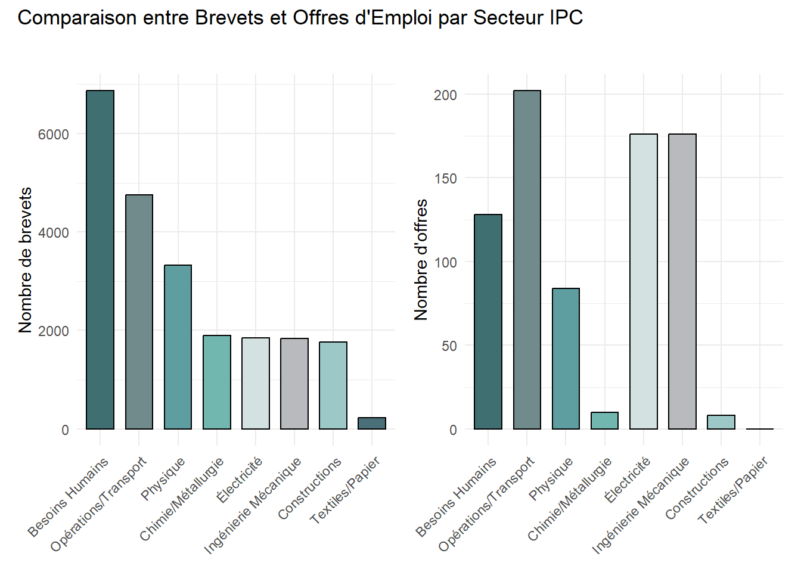
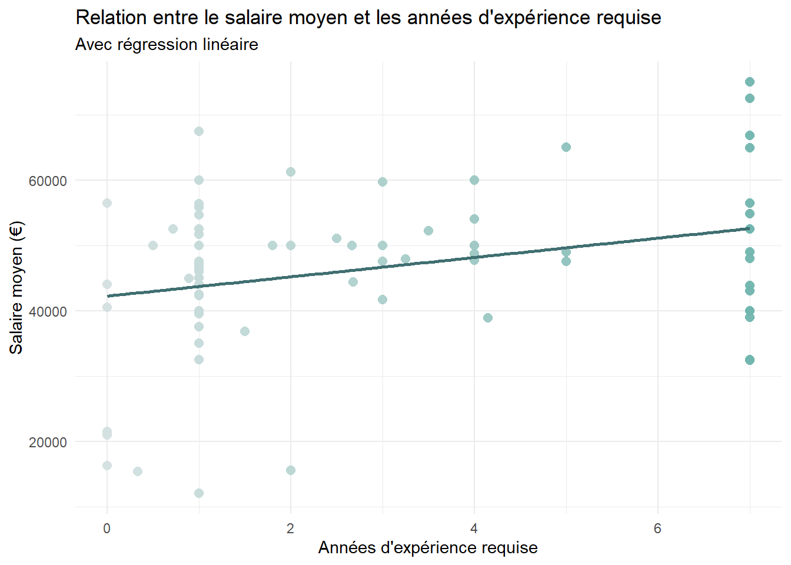
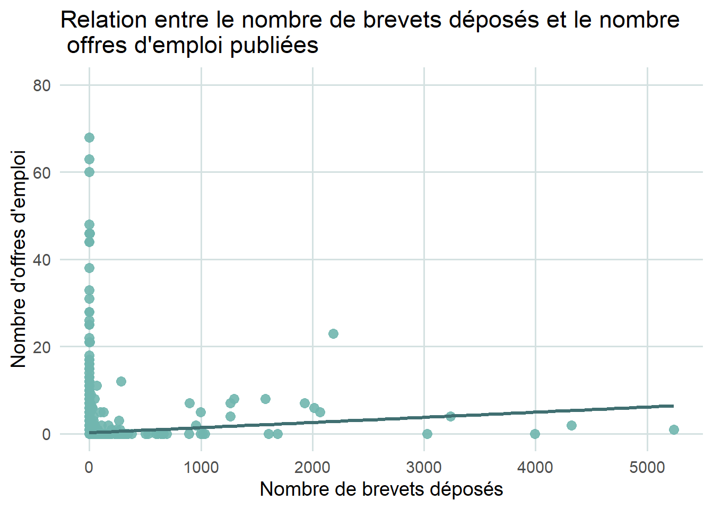
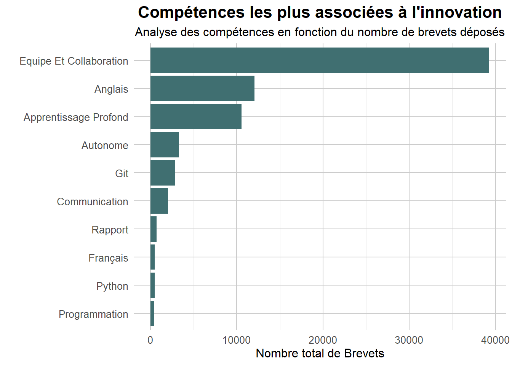
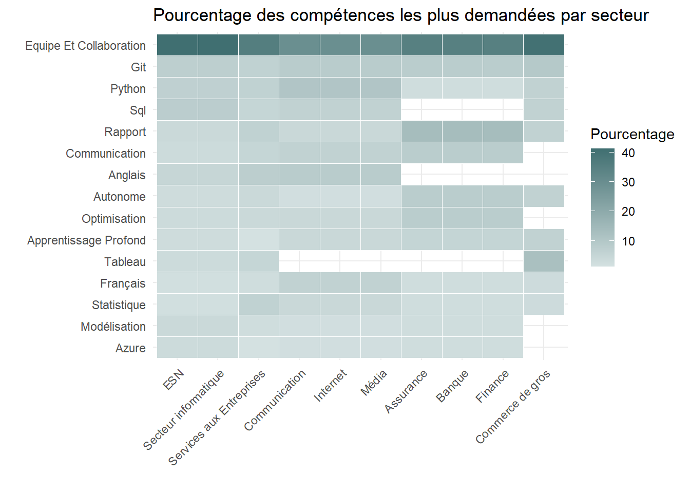

Analyses Bivariées
Dans cette section, nous analysons les relations entre différentes variables liées à l’innovation et aux compétences requises par les entreprises. Pour cela, nous procédons à des analyses bivariées permettant de comparer les variables telles que le nombre de brevets déposés, le nombre d’offres d’emploi publiées, les compétences requises par secteur et le salaire moyen. Ces analyses servent de base pour détecter des associations ou tendances qui orienteront les étapes économétriques ultérieures.
Ces analyses permettent d’explorer les liens entre innovation, compétences et dynamiques sectorielles, tout en posant les bases pour des investigations économétriques plus approfondies.
Graphique 1
Ce graphique compare le nombre de brevets déposés et le nombre d’offres d’emploi publiées par secteur IPC (International Patent Classification). Le premier graphique montre que le secteur des Besoins Humains est de loin le plus actif en termes de brevets déposés, suivi par les secteurs des Opérations/Transport et de la Physique. Les secteurs comme les Textiles/Papier et les Constructions apparaissent en revanche comme beaucoup moins innovants, avec un nombre relativement faible de brevets. Le deuxième graphique met en évidence les secteurs les plus dynamiques en termes d’offres d’emploi. Contrairement au classement par brevets, les secteurs de l’Électricité, de l’Ingénierie Mécanique et des Opérations/Transport dominent ici. Le secteur des Besoins Humains, bien qu’il se distingue en innovation (brevets), est moins représenté en termes d’offres d’emploi, indiquant un potentiel décalage entre innovation et création d’emplois. Cette comparaison montre que les secteurs innovants ne génèrent pas nécessairement le plus grand volume d’offres d’emploi, soulignant des priorités différentes.
Graphique 2

Ce graphique examine la relation entre le salaire moyen (en euros) et les années d’expérience requises pour les postes. Les points représentent des observations individuelles, et la ligne de régression linéaire illustre une tendance générale.
On observe une légère corrélation positive entre le nombre d’années d’expérience requises et le salaire moyen, indiquant que les postes exigeant plus d’expérience tendent à offrir des salaires plus élevés. Toutefois, cette relation reste modérée, comme en témoignent les écarts importants entre les points et la ligne de régression, suggérant qu’il existe d’autres facteurs influençant les salaires.
Dans l’ensemble, ce graphique met en évidence une tendance attendue mais non systématique : une expérience accrue est souvent associée à une meilleure rémunération, mais cela n’est pas toujours le cas.
Graphique 3

Ce graphique illustre la relation entre le nombre de brevets déposés et le nombre d’offres d’emploi publiées par les entreprises.
Une proportion importante des entreprises présentes dans la base ne déposent aucun brevet, ce qui explique la forte concentration des points près de l’origine. Parmi les entreprises ayant déposé des brevets, on observe que l’augmentation du nombre de brevets déposés n’entraîne pas nécessairement une augmentation significative du nombre d’offres d’emploi publiées, comme le montre la faible pente de la ligne de régression.
Cela suggère que d’autres facteurs, comme la taille de l’entreprise ou son secteur d’activité, peuvent jouer un rôle plus déterminant dans le volume des offres d’emploi.
Graphique 4

Le graphique montre les compétences les plus fréquemment associées à l’innovation, mesurée par le nombre total de brevets déposés.
Il est évident que “Équipe et Collaboration” domine largement en termes d’importance, ce qui reflète la nécessité de travailler en groupe pour conduire des projets innovants. Cela souligne l’importance des dynamiques collaboratives dans les entreprises innovantes, où l’échange d’idées et le travail d’équipe jouent un rôle central.
“Anglais” arrive en deuxième position, mettant en lumière le besoin d’une compétence linguistique essentielle dans un environnement globalisé, où les partenariats internationaux et la communication avec des équipes multiculturelles sont monnaie courante. Suivent des compétences techniques telles que “Apprentissage Profond”, qui illustre l’importance croissante de l’intelligence artificielle et du machine learning dans les processus d’innovation.
Des compétences transversales comme “Communication”, “Rapport”, et “Programmation” complètent cette liste en soulignant que, pour innover, les entreprises doivent combiner des capacités relationnelles, une maîtrise technique et une aptitude à documenter et structurer leurs projets.
En conclusion, ce graphique révèle que l’innovation est un processus multidimensionnel qui repose sur une combinaison équilibrée de compétences interpersonnelles, linguistiques et techniques. Cela souligne l’importance pour les entreprises de favoriser un environnement de travail collaboratif tout en investissant dans le développement des compétences technologiques et globales.
Graphique 5

Ce graphique met en évidence les compétences les plus demandées par secteur d’activité.
On observe que des compétences transversales comme le travail en équipe, la collaboration, et l’anglais sont fréquemment recherchées dans plusieurs secteurs, notamment dans les Banques, les Services aux Entreprises, et le Secteur informatique. Les compétences techniques, telles que Python, SQL, et la Statistique, dominent dans les secteurs axés sur les données comme les Banques, les Assurances, et les ESN, où l’analyse quantitative et la gestion des données sont essentielles.
Certains secteurs affichent des besoins plus spécifiques : par exemple, les Banques et le Secteur informatique privilégient des compétences en Apprentissage profond et Modélisation, reflétant l’importance croissante des technologies d’intelligence artificielle et d’analyse avancée. En revanche, des secteurs comme la Distribution et le Commerce de gros mettent davantage l’accent sur des compétences relationnelles telles que la Communication et le Rapport, qui sont cruciales pour leurs activités opérationnelles.
Ce graphique souligne donc à la fois des compétences communes et des spécialisations sectorielles.
Graphique 6

Ce graphique illustre la répartition des compétences demandées par secteur en pourcentage, réparties en trois catégories : Autres, Data Science et Machine Learning.
Les compétences en Machine Learning sont particulièrement prisées dans les secteurs des ESN, du secteur informatique et de l’Internet, tandis qu’elles sont très marginales dans des secteurs comme l’immobilier ou le commerce de gros. Les compétences en Data Science occupent également une place importante, notamment dans les secteurs de l’Internet, de la banque et de l’assurance, mais restent moins présentes dans des secteurs comme l’immobilier ou l’industrie agroalimentaire. Enfin, les compétences dites autres dominent largement dans la plupart des secteurs, à l’exception notable des ESN et du secteur informatique, où les compétences techniques liées à la Data Science et au Machine Learning sont particulièrement valorisées. Cette répartition montre que les compétences techniques sont principalement recherchées dans les secteurs technologiques et financiers, alors qu’elles restent secondaires dans des domaines plus traditionnels comme l’immobilier ou l’agroalimentaire.
Word Cloud 1
Compétences pondérées par les brevets